Task 1
Beginner
Build the TechBridge Homepage
Create the first version of the TechBridge website using HTML and CSS.
What you will build
A first version of the TechBridge website, written in HTML and CSS.
TechBridge provides a structured 30-day practical internship. You progressively develop your web development skills by completing practical projects, one task at a time, from your first homepage to a complete internship platform.

Each task starts on a set day. Select a task to jump to its details.
The work gets more challenging as the internship goes on.
Task 1
Beginner
Create the first version of the TechBridge website using HTML and CSS.
A first version of the TechBridge website, written in HTML and CSS.
Task 2
Beginner
Create a Programs experience that presents TechBridge's available learning programs.
A page that presents the learning programs TechBridge offers.
Task 3
Beginner → Intermediate
Create an interface that presents the TechBridge internship tasks and helps users understand the internship journey.
An interface that lays out the internship tasks so a visitor can understand the whole journey.
Task 4
Intermediate
Use JavaScript to make the internship task experience interactive and allow progress to be tracked.
An interactive version of the tasks experience, built with JavaScript, where progress can be tracked.
Task 5
Intermediate
Create a professional registration/onboarding interface for TechBridge interns.
A professional registration and onboarding interface for new interns.
Task 6
Intermediate
Create an interface through which interns can prepare and submit their task work.
An interface where interns prepare their task work and submit it.
Task 7
Intermediate → Advanced Beginner
Create a dashboard where an intern can view their profile, progress, tasks, and submissions.
A dashboard showing an intern's profile, progress, tasks and submissions.
Task 8
Intermediate → Advanced Beginner
Combine the different components created during the internship into a complete TechBridge platform.
A complete platform that brings together the components from the earlier tasks.
Apply through the official application form.